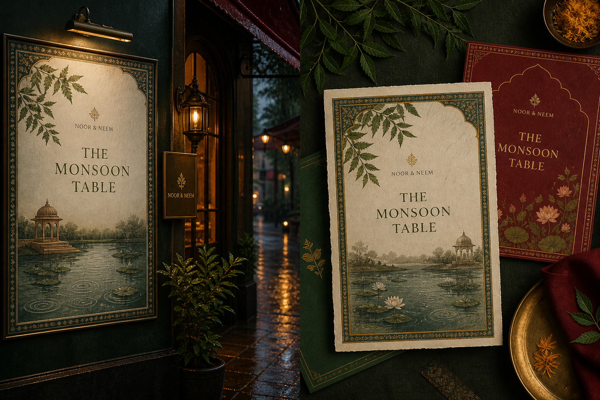
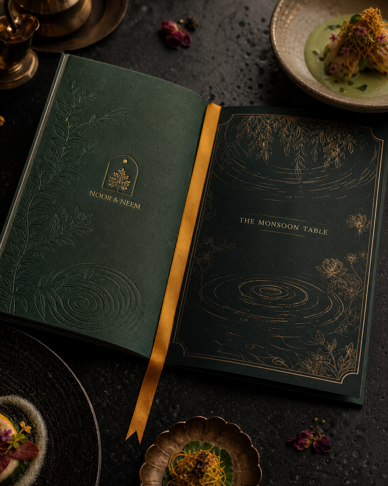
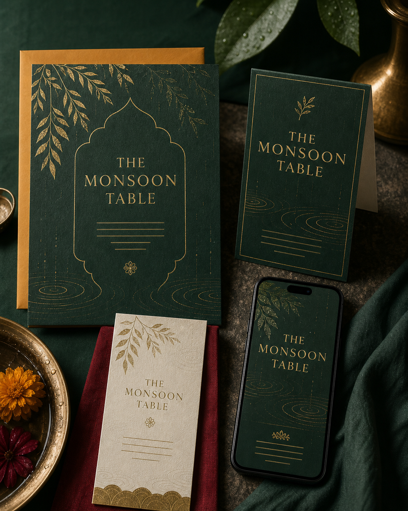

01 / THE BRIEF
A season guests can see, taste and remember.
Noor & Neem is preparing a limited monsoon tasting menu inspired by regional ingredients and rain-soaked evenings. The challenge is to turn the chef’s culinary narrative into one premium identity across menu, photography, reservations, social and the in-restaurant experience—without missing the seasonal launch window.
Success looks like
- Chef, operations and marketing align on one launch story.
- Pricing, allergens and dish availability are approved before print.
- Every guest-facing asset is ready before reservations open.
02 / SCOPE
Making the work visible.
Launch brief
Audience, seasonal proposition, guest journey, mandatories and sign-off criteria.
Seasonal identity
Campaign idea, menu language, visual direction and application rules.
Guest touchpoints
Tasting menu, invitation, table card, social launch and reservation assets.
Delivery controls
Owners, dependencies, production dates, approvals and print-ready QA.
03 / TIMELINE
Four weeks to opening night.
Define
Menu story, audience, scope and launch criteria.
Direct
Identity route, shot list and menu architecture.
Produce
Photography, layouts, copy and channel adaptations.
Launch
Final approvals, print handoff and reservation campaign.
04 / RISKS
Plan for what could wobble.
| RISK | EARLY SIGNAL | RESPONSE |
|---|---|---|
| Dish or price changes | Menu details remain open near print deadline | Content freeze and late-change impact check. |
| Shoot dependency | Hero dishes are not presentation-ready | Chef sign-off, shot list and backup compositions. |
| Premium finish slips | Printer proof or material arrives late | Proof checkpoint and pre-approved digital fallback. |
05 / REFLECTION
What this demonstrates.
This simulation shows how I would protect a strong creative idea while coordinating the details that make a hospitality launch real: dependencies, owners, approvals, production and handoff.
Skills: launch planning, stakeholder alignment, creative briefing, dependency management, production coordination and QA.
06 / LAUNCH SYSTEM
One season, every touchpoint.
The identity moves from the first reservation announcement to the menu placed at the table—kept coherent through one approved system.


